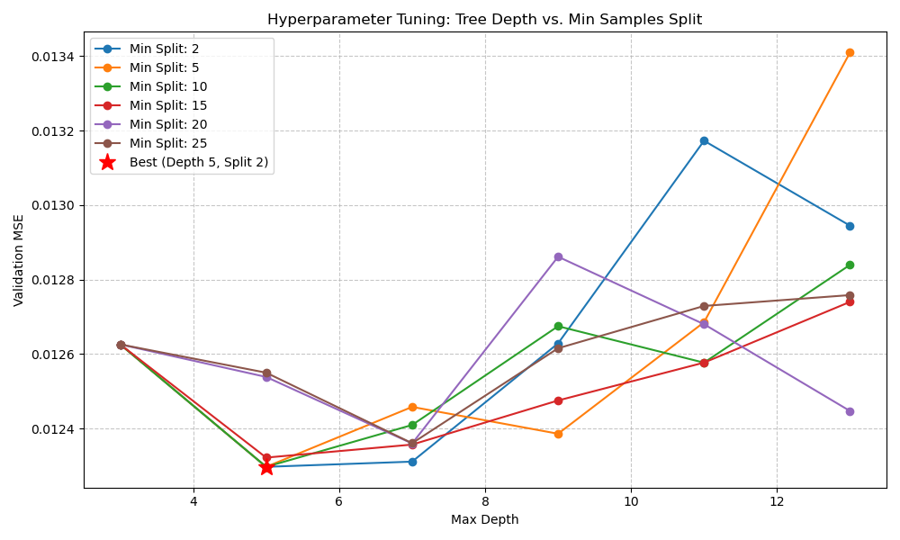
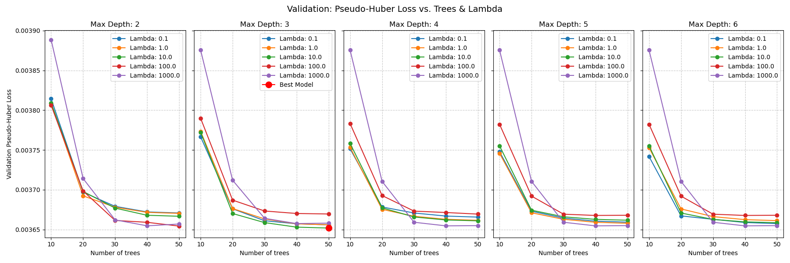
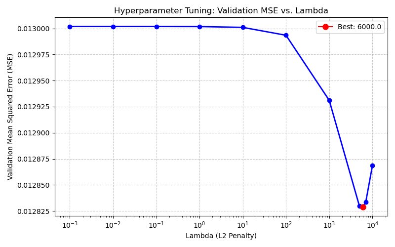

Volatility, not direction
NIFTY-50 Stock Volatility Prediction.
5 equities/5-day forecast horizon/6 models
The Precise Question
Can tree-based machine learning models, specifically Random Forests and XGBoost built from scratch, accurately forecast the 5-day forward volatility of major NIFTY-50 stocks? And do they stay stable through extreme macro-shocks like the March 2020 COVID-19 crash?
Target and Unit
Our target is Target_Vol_5d: the annualized standard deviation of daily log returns, taken over a 5-day rolling window and multiplied by √252.
Prediction-time Information
The models only see what was known at the market close of day t, the day we make the prediction. Every engineered feature (5-day cumulative return, 21-day trailing volatility, 3-day/21-day volume ratio) is calculated from history up to t and nothing after. The target is the volatility from t+1 to t+5.
To enforce this and stop future data leaking in, we purge the 5-day overlapping boundaries between the training and validation sets. For the final testing phase we go a step further and use a 6-month walk-forward rolling optimization.
The forecasting boundary
Inputs stop at the prediction point. The target is calculated from the next five trading days.
Limits of the Claim
We’re predicting the magnitude of volatility, not the exact day-to-day moves in price. A Mean Directional Accuracy (MDA) of 52.68% and an out-of-sample R² of 0.29 show that the models pick up real variance and have a slight edge over a coin flip on direction. They’re still limited by the natural noise of overlapping financial time series.
Scope
Five highly liquid, large-cap NIFTY-50 stocks (Reliance, TCS, ITC, Maruti and HDFC Bank) between 2008 and 2026.
Source and Access Limits
The raw data comes straight from the National Stock Exchange (NSE) of India through the yfinance Python API. It’s public and open-source, but to avoid API rate limits and network lag during training, we downloaded the whole history (January 2008 to October 2026) once and stored it locally as raw_data.csv.
Row Meaning
Each row is one trading day’s aggregated market activity for one NIFTY-50 stock. Weekends and exchange holidays aren’t trading days, so they’re naturally left out.
RELIANCE.NSTCS.NSITC.NSMARUTI.NSHDFCBANK.NSImportant Variables
Target_Vol_5d: the annualized standard deviation of daily log returns over the future 5-day windowRelevant Quality Checks
Holiday Padding Removal
yfinancesometimes pads exchange holidays with zero-volume rows where Open = High = Low = Close. A strict filter scrubs these artificial rows.df = df[df['Volume'] > 0]
Edge-Case NaN Dropping
Rolling windows (the 21-day trailing features and the 5-day forward target) naturally leave
NaNvalues at the edges of the dataset. We drop those rows instead of forward-filling or back-filling, because filling would leak information across time in a financial series.df = df.dropna()
Leakage-Free Scaling
We wrote an object-oriented
StandardScalerfrom scratch. It learns the mean and variance only from the 2008–2018 training data, then applies that frozen transformation to the validation and test sets, so nothing from the future leaks into the fit.
From raw data to model-ready features
Clean
Transform
Align
- DailyLogReturn
- IntradayRange
- Vol_5d
- Vol_21d
- VolumeRatio
- 5dayCumReturn
Target_Vol_5dFuture window · t+1 to t+5Date and Ticker identify and order the rows; the six engineered variables are the model inputs. The future target is kept apart from them.
Justification of Transformations
01Logarithmic Returns
DailyLogReturn
Unlike simple percentage returns, log returns are symmetric and time-additive, which makes them the better choice for variance and volatility calculations.
02Market Friction Proxy
IntradayRange
Dividing the day’s high-low spread by the closing price normalizes intraday price action. The result is scale-invariant, so it works as a proxy for daily micro-volatility across stocks at very different price levels.
03Volatility Annualization
Vol_5d · Vol_21d · Target_Vol_5d
This is the rolling standard deviation (N−1 degrees of freedom) of log returns, scaled by the square root of the number of trading days in a year. That turns localized variance into a standard annualized number that’s comparable everywhere. The target uses the exact same formula, shifted 5 days into the future.
04Volume Summaries
VolumeRatio
Raw volume is highly non-stationary and trends upward over decades. Taking a 3-day moving average relative to a 21-day baseline picks out sudden liquidity surges and makes the feature stationary.
05Momentum Aggregation
5dayCumReturn
Since log returns add up over time, a plain rolling 5-day sum is a sound measure of short-term directional momentum.
Leakage-Free Standard Scaling
So that features with large magnitudes (like VolumeRatio) don’t dominate the models, we standardize everything with Z-scores:
Our from-scratch StandardScaler computes the mean (μ) and standard deviation (σ) only on the 2008–2018 training set. The validation and test sets are then transformed with those frozen training statistics, so no future distribution can leak into training.
The Overlapping Boundary Purge
The target looks 5 days ahead, so a plain chronological split leaks: the last 5 days of the training set share target math with the first 5 days of the validation set.
To close that gap, the pipeline drops the contaminated edge rows from both the training and validation splits before scaling, using .groupby('Ticker').head(-5). We did the same for the 21-day windows.
Temporal split discipline
5 days
5 days
Schematic, not to scale. Purging removes rows whose forward-looking targets cross a split boundary.
Meaningful Baselines
The Overlapping Naive Baseline Trap: Naive Persistence
The usual “random walk” baseline just shifts the target forward by one day. That breaks down here. The target (Target_Vol_5d) is a rolling 5-day window, so a 1-day shift shares 80% of its data with the previous day. That’s heavy leakage, and it gave us an out-of-sample R² of 0.77 that looked great and meant nothing.
So we built a custom Naive Persistence model instead. It treats the market as a pure martingale process and predicts that future 5-day volatility will equal the trailing 5-day volatility feature, Vol_5d. If our ML models beat this, they’re finding genuine alpha and not just riding autocorrelation.
Ridge Regression (Linear Baseline)
Financial features like the 5-day and 21-day trailing volatilities are inherently multicollinear, and plain Ordinary Least Squares (OLS) would end up with exploding weights. Our custom Ridge Regression solver sets a linear performance floor, using an L2 penalty to handle the collinearity and limit overfitting.
Method Choices and Architectural Justifications
Variance Reduction, not Gini or Entropy
Gini and entropy measure how mixed the class labels in a node are, so they only apply to classification. Our target, Target_Vol_5d, is continuous, so the Random Forest splits by variance reduction.
Minimising the children’s weighted variance is the same as minimising squared error when each leaf predicts its mean. That mean is the unique minimiser, because Σ(y−c)² is strictly convex in the leaf prediction c. Variance is also a concave impurity measure (law of total variance), so a split can never increase the weighted variance and Gain ≥ 0. Our XGBoost uses the second-order gradient/Hessian gain with L2 penalty λ instead.
Percentile Candidate Thresholds
Exact greedy CART tests the midpoint between every pair of consecutive sorted values, which costs O(n) candidates per feature per node. With many trees and many nodes this gets expensive. Instead, each node tests at most 10 candidate thresholds per feature, taken at the 0th, 10th, …, 90th percentiles of the node’s values.
thresholds = np.unique(np.percentile(X_column, np.arange(0, 100, 10)))
This is the same idea as the histogram-based approximate split finding in XGBoost and LightGBM. It is an approximation, so it can choose a slightly different split from the exact search, but the loss in split quality is small and the compute cost drops sharply.
Custom XGBoost with Pseudo-Huber Loss
Financial markets throw up extreme, unpredictable outliers, like the March 2020 COVID-19 crash.
Standard gradient boosting minimizes Mean Squared Error (MSE). In a crash, the squared error of a volatility spike produces a massive gradient, and the model overreacts and overfits the outlier. We built our own XGBoost engine that optimizes a Pseudo-Huber loss instead. It acts like convex MSE for normal daily errors, then eases into a linear Mean Absolute Error (MAE) for extreme ones. That caps the gradient penalty and keeps the model stable through 2020.
Custom Random Forest
We expect complex, non-linear relationships between liquidity surges (Volume Ratio) and price friction (Intraday Range).
We built the decision-tree ensemble from scratch, splitting nodes by variance reduction. Bootstrap aggregating (bagging) and random feature subsets (max_features='sqrt') stop individual trees from memorizing the noise of specific events, like the 2008 financial crisis.
Walk-Forward Optimization (Rolling Windows)
Market microstructure is non-stationary: a model trained on 2008 data decays and is far less relevant by 2024.
So instead of a static train-test split, we run a dynamic temporal loop. The models train on past data and predict exactly 6 months ahead. Then we roll the training window forward to absorb those 6 months and predict the next block. This lets the algorithms keep adapting to the shifting volatility regimes of the NIFTY-50.
Six-month walk-forward cycle
↻ Repeat for the next six-month block
Each block is forecast before its actual outcomes are used for any further training.
The model lineup
- Naive Persistence
- Ridge Linear Regression
- Random Forest–Static
- Random Forest–Rolling
- XGBoost–Static
- XGBoost–Rolling
Six models in total: two reference baselines, and two training setups for each tree ensemble.
The Split and Validation Design
Financial time series can’t be randomly shuffled, so we split the data chronologically into a Training Set (2008–2018), a Validation Set (2019) and a completely unseen Test Set (2020–2026).
To keep the splits clean we enforced a 5-day boundary purge. The target looks 5 days ahead, so the last 5 days of 2018 share data with the first 5 days of 2019. We dropped those overlapping rows (head(-5)) before any scaling or training.
Chronological split
5 days
Schematic, not to scale. The test set is never touched during tuning.
The Validation Journey: Tuning vs Final Testing
Hyperparameter tuning was kept strictly separate from testing. Everything was evaluated only on the 2019 Validation Set.
Why Grid Search
We used grid search because our search spaces are small (1D for Ridge, 2D for Random Forest, 3D for XGBoost) and each evaluation is cheap. A full grid is deterministic and reproducible, and it gives the complete validation surface, which is what the tuning curves show, including the elbow at about 30 XGBoost estimators. Bayesian optimisation and random search pay off when evaluations are expensive or there are many hyperparameters. Bayesian optimisation also needs a surrogate model (such as a Gaussian process), which would be extra machinery in a from-scratch project. One limitation remains: all tuning uses a single validation year (2019), so the chosen values may be specific to that year.
Fixed Random Seed
Random Forest training is random in two places: the bootstrap sample of rows and the random subset of features at each split. We seed np.random.choice so every hyperparameter setting is evaluated with the same random draws. This means differences in validation MSE come from the hyperparameters and not from the luck of a particular bootstrap. A single seed cannot remove randomness completely, but it makes the comparison between settings fair.
Depth 5, Min Split 2
We searched across max_depth (3 to 13) and min_sample_split (2 to 25). The 2D validation curve shows that deeper trees overfit the noise of the 2008 crisis in the training data almost immediately, and validation MSE spikes. So we locked in Depth 5 with a Min Split of 2.

max_depth and min_sample_split.Depth 3, 30 Estimators, λ = 10
We mapped Depth (2–6), Trees (10–50) and L2 Lambda (0.1 to 1000) against the Pseudo-Huber loss. The raw minimum sits at depth 3, 50 estimators and λ = 10. But the curve has a visible elbow at around 30 estimators, with no meaningful drop in loss after that. So we picked Depth 3, 30 Estimators and λ = 10.0.

λ = 6000
We evaluated a logarithmic grid of λ values (0.001 to 10,000) and looked for the lowest validation MSE. The minimum landed at λ = 6000.

Retraining for the final test
Once the grid searches were done, the parameters were locked for good. To give the models the most exposure to the latest pre-Covid market regime, we retrained them fresh on the combined 2008–2019 data, then ran the final out-of-sample tests on 2020–2026.
Justification of Metrics and Comparisons
Here’s how each metric is calculated and which direction is better.
Pseudo-Huber Loss Lower is better
Here e = y − ŷ is the prediction error, δ = 0.1, and the loss is averaged over all test predictions. It acts like squared error for small errors and like absolute error for large ones.
RMSE Lower is better
The square root of the average squared error. Squaring means large misses count extra.
MAE Lower is better
The average absolute size of the error, with every miss weighted equally.
Mean Directional Accuracy (MDA) Higher is better
The percentage of predictions where the model called the direction of the volatility shift (expansion or contraction) correctly. 50% is a coin flip, so anything above it is a real edge.
Out-of-Sample R² Higher is better
Here &ybar; is the historical mean. R² is the share of variance the model explains compared with always predicting that mean. 0 means no better than the mean, and negative means worse.
Final evaluation across the unseen 2020–2026 out-of-sample test horizon across all liquid constituents. The metrics below are computed directly from the test prediction outputs.
Results Interpreted in Context
The switch to walk-forward (rolling) optimization is what made the models viable. The static ML models scored a Mean Directional Accuracy (MDA) of only 38.78% (XGBoost) and 39.68% (Random Forest), while the rolling versions reached 52.28% and 52.68%. Crossing the 50% coin-flip line shows that the rolling models adapt to the shifting NIFTY-50 microstructure.
The models also capture real variance, with an out-of-sample R² of 0.27 to 0.29 across the volatile 2020–2026 test period. Because we avoided the 1-day shifting target trap, our Naive Persistence baseline falls to an R² of −0.09. Beating it shows the algorithms learned the underlying feature relationships, and aren’t just exploiting the autocorrelation of an overlapping 5-day window.
Complete Model Comparison Table (2020–2026 Test Set)
| Model | RMSE ↓ | MAE ↓ | Pseudo-Huber ↓ | MDA (%) ↑ | Out-of-Sample R² ↑ |
|---|---|---|---|---|---|
| Random Forest (Rolling) Bagging | 0.1270 | 0.0879 | 0.0043 | 52.68% | 0.29 |
| Random Forest (Static) | 0.1271 | 0.0880 | 0.0043 | 39.68% | 0.29 |
| XGBoost (Rolling) Boosting | 0.1285 | 0.0849 | 0.0041 | 52.28% | 0.27 |
| XGBoost (Static) | 0.1284 | 0.0849 | 0.0041 | 38.78% | 0.27 |
| Ridge Regression Linear Baseline | 0.1326 | 0.0932 | 0.0048 | 41.19% | 0.22 |
| Naive Persistence Martingale | 0.1571 | 0.1089 | 0.0060 | 41.16% | -0.09 |
↓ Lower is better for error metrics (RMSE, MAE, Pseudo-Huber). ↑ Higher is better for accuracy (MDA > 50% coin-flip) and variance explained (R²). Best values per column are highlighted in green.
Interactive Metric Comparison
Switch between evaluation metrics using the dropdown below to compare model behavior and see which models lead under different loss formulations:
Metric Insight
Root Mean Squared Error (RMSE): Random Forest (Rolling) achieves the lowest overall error at 0.1270, closely followed by Static RF (0.1271) and XGBoost (0.1284). All tree models substantially beat the Ridge baseline (0.1326) and Naive Persistence (0.1571).
Representative Errors and Uncertainty
Errors follow the objective functions
The error metrics line up with what each algorithm optimizes. Random Forest achieved the lowest Root Mean Squared Error (0.1270 rolling, 0.1271 static), because its variance-reduction splits optimize squared deviations directly.
XGBoost wins on the robust losses
XGBoost, on the other hand, won both the Pseudo-Huber loss (0.0041) and the Mean Absolute Error (0.0849).
What happened during the crash
Actual volatility hit an extreme of roughly 1.4. The baselines struggled: Naive Persistence produced large, lagged errors by over-predicting after the crash had already happened, and Ridge Regression badly under-predicted the size of the shock. XGBoost (Rolling) handled it best. It scaled up for the high-volatility regime but held back from the extreme 1.4 spike, which is the outlier resistance we wanted from the Pseudo-Huber penalty.
Representative Errors & Autocorrelation
Because the target Target_Vol_5d spans five consecutive days, an unexpected macro news event on day \(t\) causes errors in predictions made at \(t-4\) through \(t\). This induces visible block autocorrelation in the residuals. In addition, when volatility spikes abruptly and mean-reverts within 48 hours, all models exhibit a 3–5 day lag before re-converging to baseline.
Loss Plots by Stock and Model
Every model’s prediction plot for every stock, for the COVID crash window and for the overall test period. Pick a period, a stock and a model, or show all six side by side.
Loss plot explorer
Limitations and Boundaries
Macro-regime vs. micro-direction
With an MDA around 52%, the models give only a small edge over a random guess for daily direction. They’re good at forecasting the magnitude of the coming volatility regime, but they can’t reliably call the exact day-to-day zig-zags of the market.
Feature constraint isolation
The pipeline uses only internal price and volume derivatives (endogenous variables). It has no external macroeconomic indicators, interest-rate data or implied-volatility measures like the India VIX, which caps how well it can ever predict.
Overlapping target
Predicting a rolling 5-day window smooths the target, so the predictions for day t and day t+1 share 4 days of data. Walk-forward optimization reduces chronological decay, but deploying this as a live quant strategy would need strictly non-overlapping forward returns or fractional differencing.
Regime Shift in 2020
The March 2020 COVID-19 crash is a regime shift: the market behaved differently from anything in the 2008–2019 training data, so the relationship between our features and future volatility changed. Static models are trained once and cannot adapt to this. Tree models also predict by averaging training targets, so they cannot output values beyond the range seen in training, while the linear Ridge model can extrapolate. Rolling (walk-forward) retraining helps the models adapt, but only after a delay of up to six months, so even the rolling models lag a sudden shock. We therefore treat our results as a measure of how well each model copes with a shock, and do not claim that any model can foresee one.
Other Limitations
The study covers only five large-cap stocks. Hyperparameters were tuned on a single validation year. Targets overlap across consecutive days, so errors are strongly autocorrelated. Our results describe predictive accuracy for volatility and are not a trading strategy or a causal claim.
Stress-Test Explorer
Interactive stress-test laboratory: examine how from-scratch models reacted during the historic March 2020 COVID-19 crash, the 2022 inflationary rate-hike shock, and normal market regimes. Inspect the Ceiling Effect in real time.
Real out-of-sample model predictions plotted directly from the test evaluation results (2020–2026).
Interactive Controls
The Out-of-Distribution “Ceiling Effect”
Notice how during the peak of the March 2020 COVID crash, actual volatility surged beyond 100%–130%. Because decision trees make predictions by partitioning the feature space and outputting the average of training leaf observations, tree models can never predict a value higher than the maximum target observed in their training data (≈ 65%).
As a result, both Random Forest and XGBoost completely “plateau” at the ceiling during unprecedented shocks. In contrast, Ridge Regression (being a linear function \(y = w^Tx + b\)) extrapolates out-of-distribution and keeps climbing alongside the actual surge. However, during normal market conditions, trees achieve vastly superior non-linear modeling.
One-Click Reproducibility
The whole pipeline is orchestrated by a single master script, run_pipeline.py. Running it triggers the full chronological sequence: data extraction (fetch_data.py), feature engineering (preprocess_data.py), purging and scaling (split_and_scale.py), the walk-forward ML scripts, and finally the graphing engine (evaluate_models.py).
From a fresh clone of the GitHub repository, that one command reproduces all the CSV outputs, model weights and high-resolution visuals.
Modular Technical Integrity
Libraries we avoided
The project avoids black-box libraries like scikit-learn and the official xgboost package.
What we built ourselves
Every algorithm is engineered from scratch in Object-Oriented Python and NumPy: the recursive Decision Trees, the Pseudo-Huber gradient boosters, the Ridge baseline and the StandardScaler. That keeps the data, split logic, preprocessing maths and model step-throughs transparent and auditable.
Responsible Data and Creation Handling
Open-source source
The pipeline relies on the open-source yfinance API to query public National Stock Exchange (NSE) data.
No keys or subscriptions
Because the data is public, the codebase needs no private API keys, authentication tokens or paid subscriptions to run.
Relative paths, local CSVs
No sensitive credentials, hardcoded absolute paths or personal environments are exposed in the repository. Intermediate datasets are saved as relative CSVs (raw_data.csv, processed_data.csv), so data handling stays isolated and safe and works on any machine.
25110278
I implemented the decision tree class and the Random Forest from scratch, with no scikit-learn. I also built the Ridge regression model (linear regression with an L2 penalty) and used grid search to tune the hyperparameters. I chose variance reduction as the split criterion because Gini and entropy are for classification, and our target is continuous. With variance reduction each leaf predicts its mean, and that mean is the best choice for squared error because squared error is strictly convex in the leaf value. Variance is also a concave impurity, so a split never increases it. I annualized volatility by multiplying with √252, which is the market standard, so anyone with a finance background can read our numbers directly without confusion.
At first I used the midpoints of all sorted samples as split thresholds, but with a 6×6 grid over depth and min-sample-split and 30 estimators, training took far too long. Karnav suggested percentile steps, which cut the compute and give approximately the same tree. I also understood that bootstrapping gives each tree only about 63% of the unique rows, which is why the trees differ and why averaging them reduces variance. I seeded np.random.choice so every hyperparameter setting sees the same random draws, which makes the validation comparison fair and reduces the chance that a lucky sample decides the winner. I considered time-series cross-validation and Bayesian optimization, but our search spaces were small and cheap, so we kept grid search and used walk-forward rolling windows for the final evaluation. While doing this I also worked out how leakage comes from overlapping targets and from the way we split the data, which led to the 5-day purge and the leakage-free scaler.
When we looked at the results, both tree models plateaued during extreme volatility instead of following the spikes, because a model can only learn from the data it is given. I learned that interpretable models work well in normal market regimes but perform badly under major concept drift. I identified regime shifts in 2020 (COVID) and 2022 (inflation and rate hikes), and compared them with the 2008–09 crisis. That crisis is inside our training data and 2020 is not, which is why 2020 is the harder test. Because of this, I think continuous walk-forward retraining matters, and a hybrid of a linear model with trees would probably cope better.
25110158
I built our custom XGBoost boosting engine and object-oriented StandardScaler from scratch in pure NumPy (zero scikit-learn), and authored run_pipeline.py to run the entire end-to-end workflow in a single master script. I swapped MSE for Pseudo-Huber loss so gradient steps wouldn't blow up during extreme spikes like the COVID crash, and used decile candidate thresholds (10-percentile steps) to keep continuous tree splitting fast and computationally cheap. To eliminate lookahead leakage from overlapping target windows, I enforced a strict 5-day boundary purge (head(-5)) with Shubham. I evaluated the models using financial metrics: using MDA to prove walk-forward retraining actually adapts to shifting markets, and out-of-sample R² beating Naive Persistence to confirm the improvement in the outputs. After doing all this, I see that our model remains blind to external macro shocks (like RBI rate hikes) because it only sees OHLCV without India VIX feeds, and that moving to a 1-day target would eliminate the window overlap but would also drown daily OHLCV in overnight noise without tick data.
I understood that tree algorithms plateau in regression because leaf predictions are actually just the bounded averages of training targets and cannot extend out-of-distribution. The deeper lesson I learned from this project is that while tree ensembles are great in normal regimes, volatile financial markets would require some sort of hybrid modeling (combining linear extrapolation with tree residuals) and continuous walk-forward adaptation to survive this domain.
For AI usage, check AI_Usage.md in the repository.